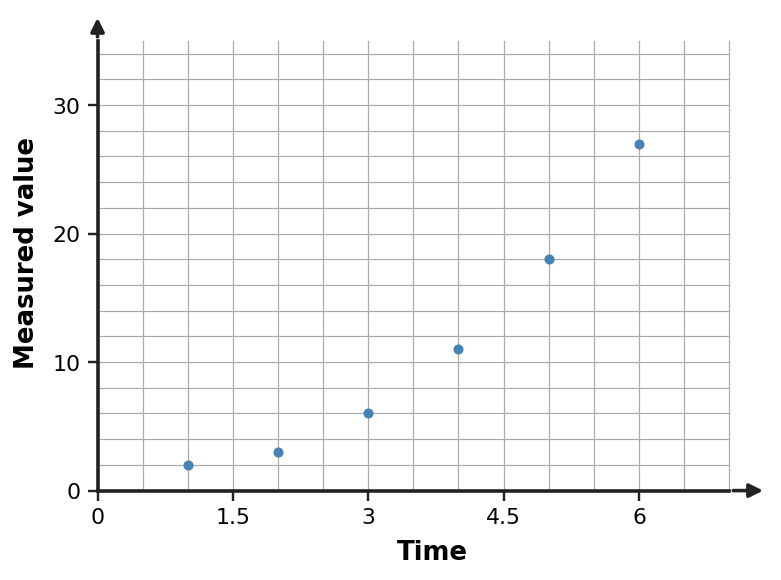

Classroom Copy 1
Station 1 • Set 1
Problem 1
Describe the trend in the scatter plot and decide whether a linear model is reasonable for the displayed data. Support your decision with the pattern of points.

Problem 2
Describe the trend in the scatter plot and decide whether a linear model is reasonable for the displayed data. Support your decision with the pattern of points.

Problem 3
Describe the trend in the scatter plot and decide whether a linear model is reasonable for the displayed data. Support your decision with the pattern of points.

Problem 4
A linear model is $y=\frac{3}{2}x+20$. Use the model to predict $y$ when $x=12$ and interpret the result as a model prediction rather than an exact observed value.